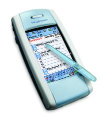

| SonyEricsson P800
It's a tri-band phone, it's a PDA, it's a camera. I won't bore you with the details of the P800 "smartphone" features: you can get the full spec from any of the related links we've provided. What you need to know is that it works, and it's good. I've been a long-time Palm PDA user, and for a few years I've been complaining that there's no single unit that's both a good PDA and a good phone. By "good", I mean something that's durable (unlike the Handspring), open (so I'm not locked into the product; I want to take my data and software to other devices in the future), small (enough) and usable (like PalmOS). And the P800 does it for me. I've had the phone for about three weeks now, and I use it as an organizer (diary, to-do list, address book, notes), text messaging, calls and a little bit of web surfing. And for these tasks, it does just what I want to do. I've started to use the camera as well. Initially I thought there was really no need for a camera, but it's a nice addition. There's something very satisfying about having pictures in your address book (you could do this on the Visor with the eyemodule), and having faces appear when you receive calls or having little thumbnails of friends to press to make a call. I'll also no doubt end-up photo blogging. All in all, I'm glad there's a camera on the phone, and I'm happy with the extra space it takes up. There are some downsides. I'm a Linux user, and SonyEricsson have chosen to only support Windows. That's not as bad as it sounds, as the phone can sync it's data across the network or using Bluetooth. The battery life is given as 7 days standby, but the phone just about lasts a weekend if I'm using it for photos, surfing and making calls. I guess that's still not bad. Regarding the size, if you're used to one of the really small phones, this is going to look like a monster to you. Out of all the tech goodness in the phone, the only omission is 802.11b (WiFi) connectivity and the FM radios you seen on other phones. For the last six months or so I've been using an old PalmPilot, and switching to the P800 is a bit of a leap: the screen quality (size, brightness, colour) is amazing, and the speed of the phone is fine. Anyone with a more recent PDA (like the Handera) might not be so impressed. The handwriting recognition (Jot) is fine, although it is altering my normal handwriting in the same way that Palm's graffiti did. Summary: I'm impressed. |
 Related Links:
|
|
Back to index page |